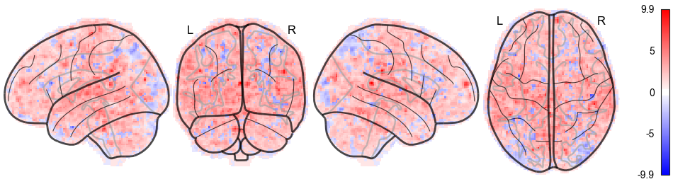

Summary
- Dataset: /Users/markiewicz/Projects/crn/fitlins/examples/ds003_fmriprep/sourcedata
- Model: ds003_model001
Contrasts
wordGtPseudo

About
- Fitlins version: 0.4.0+2.ge71c132.dirty
- Fitlins command: /anaconda3/envs/jupyter/bin/fitlins ds003_fmriprep/sourcedata output/ dataset --derivatives /Users/markiewicz/Projects/crn/fitlins/examples/ds003_fmriprep --model /Users/markiewicz/Projects/crn/fitlins/examples/models/ds000003/models/model-001_smdl.json --participant-label 01 02 03 -w scratch --n-cpus 2
- Date processed: 2019-05-14 15:12:36 -0400